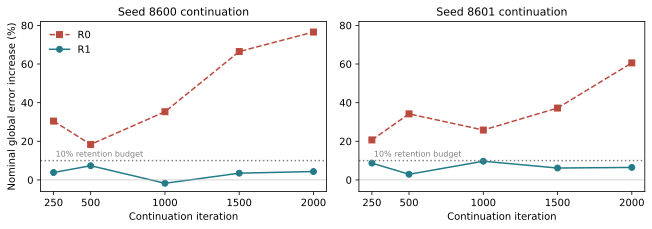

Research status · SONIC / Unitree G1 · simulation only · Updated September 10, 2026
Robust humanoid tracking.
Keep the motion, regain the path.
LUCID studies how humanoids can follow human motion under uncertain dynamics, actuation delay and disturbances without losing tracking quality. Our completed work exposes training-range collapse and motion drift, and tests safeguards. Our next proposed step is recovery from deployable path feedback with explicit protection of the original skill.
Measure the conditions the policy can handle—and the motion it actually executes.
Current manuscript: When Training Gets Easier: Range Collapse and Tracking Drift in Humanoid Robustness Training. This is a diagnostic study in simulation. It does not claim that adaptive curricula outperform fixed randomization, and it reports no hardware result.
Adaptive runs nearly collapse their own training ranges. All six shrink them.
Requested reductions blocked by the never-shrink projection across three seeds.
Nominal completion held by every continuation arm, at global tracking errors differing by 92 mm.
Watch the evidence
Staying upright and following the motion are different outcomes.
Nominal tracking cost
Mean time before leaving the 0.5 m path band falls from 5.5 s to 1.3 s with deployment DR. Both policies remain upright at the endpoint.
Disturbance tradeoff
At mixed MuJoCo severity 2, final-height failures fall from 14/16 to 5/16. This proxy checks final pelvis height; it does not detect every fall or establish recovery.
Read the full comparison
The control completes some perturbed trials; the DR arm completes none. Neither demonstrates reliable full-clip tracking.
Conditions, videos and tables →Isaac evaluation now complete: all 196 final cells have successful exits and metric files. On 102 development motions, completion is 66.67% → 60.78% at nominal physics and 0.98% → 50.98% at fixed 60 ms delay (no DR → deployment DR). Completion does not certify tracking quality. Receipt audit · Full September 10 review
Measured safeguards → proposed method
Protect the skill. Make path error observable. Then test recovery.
1. Preserve exposure
Implemented and measured. A never-shrink projection blocks range contraction. Fixed external evaluations prevent easier practice from masquerading as greater robustness. This safeguard has no established advantage over fixed DR.
2. Preserve tracking
Measured on two continuation seeds. Cached origin-action anchoring constrains nominal skill drift during hard-condition practice. Retention checks measure completion and global/local errors at fixed checkpoints.
3. Recover using estimated feedback
Proposed; efficacy untested. Add reference-relative displacement, heading and estimator validity through a common input adapter. Compare absent, oracle and realistically estimated feedback under fixed DR before adding adaptive scheduling.
The most promising next experiment is the matched feedback ablation with a competent multi-motion origin and identical behavior protection. If only oracle feedback helps, localization or actuation becomes the next bottleneck. If neither helps, revisit the controller before building a curriculum.
What remains for a methods and systems paper: a calibrated recovery definition; multi-motion retention; independent origins; held-out disturbance combinations and sensor errors; matched sim2sim actuator/observation contracts; and measured hardware tracking and recovery. The utility estimator and residual allocator remain gated. Experiment sequence, decision gates and literature →
Completed evidence
Two measurements expose two different losses.
Range collapse
Across twelve scored runs, terminal training return and independently evaluated robustness have Spearman rank correlation −0.73. One collapsed run loses 14.19 success-AUC points against fixed randomization on the same seed.
A never-shrink projection blocks every requested reduction and passes a preregistered empirical tolerance rule. Its mean difference from fixed is +0.60 points, sample SD 2.25, three seeds. The one-sided 95% lower bound is −3.19 points: this does not establish equivalence or statistical noninferiority. Because the controller is capped at the envelope, the two arms train on nearly the same distribution, so that comparison bounds seed noise rather than testing a distinct regime.
Tracking drift
Unanchored continuation raises nominal global MPJPE from 127.93 to 225.87 mm while completion stays at 100%. Holding the practice mixture fixed does not prevent the loss (+28.20% on the earlier legacy panel), and restoring optimizer state does not either (+27.75%); those two are the same configuration measured twice, not two independent controls.
A reference-action anchor limits the final increase to 4.33% and passes empirical retention at all five sampled checkpoints, improving hard-condition tracking qualification by 5.18 percentage points over origin. This is one origin and one motion, now measured at two continuation seeds. Two continuations from one origin are two seeds, not two independent origins.
| Policy | Global error (mm) | Local error (mm) | Global change | Hard qualification | Five retention checks |
|---|---|---|---|---|---|
| origin | 127.93 | 28.19 | +0.00% | 42.77% | Reference |
| R0 | 225.87 | 30.21 | +76.56% | 49.02% | Fail |
| R1 | 133.47 | 27.96 | +4.33% | 47.95% | Pass |
| R2 | 163.53 | 28.31 | +27.83% | 53.42% | Fail |
R0: unanchored continuation. R1: reference-action anchoring. R2: a halved, non-adaptive learning rate, which changes the schedule as well as the magnitude. Retention is checked separately under nominal and original-envelope conditions: global and local error increases at most 10%, completion loss at most 2 percentage points.
R1 is not the best arm on every metric. R0 and R2 reach higher hard qualification, 49.02% and 53.42% against R1's 47.95%, and both violate retention. R1 is a feasible tradeoff, not dominance. Its hard qualification is also non-monotonic across checkpoints, and the frozen 2,000-iteration endpoint is not its peak. The 4.33% is that endpoint value; R1's largest sampled increase on this seed is 7.35% at 500 iterations.

Each arm receives 49,152,000 simulator transitions. R1 adds 10,240,000 anchor presentations and 80,000 student forwards. Transitions are matched; total computation is not. Rollout aliases increase within-policy precision and are not independent training seeds.
Preregistered replication
The retention result repeats at a second continuation seed.
Completed 2026-09-07 · 57 / 57 cells Both training cells and all 55 fixed-policy evaluation cells finished. The protocol was registered before the run, and the only recorded scientific change is the PPO and environment seed, 8600 to 8601. The origin checkpoint, the motion, the anchor buffer, the cohort-assignment and anchor-sampling seeds, the evaluation seed, the five conditions, the thresholds and the checkpoint schedule were all held fixed. R2 was not repeated and no parameter search was run.
| Policy | Seed | Nominal global (mm) | Increase | Hard qualification | Gates |
|---|---|---|---|---|---|
| origin | both | 127.93 | Reference | 42.77% | Reference |
| R0 | 8600 | 225.87 | +76.56% | 49.02% | Fail |
| R0 | 8601 | 205.43 | +60.58% | 48.63% | Fail |
| R1 | 8600 | 133.47 | +4.33% | 47.95% | Pass |
| R1 | 8601 | 136.20 | +6.46% | 50.49% | Pass |

The direction replicates on every count. R1 passes all five checkpoints under both nominal and original-envelope conditions on both seeds; R0 fails at the very first checkpoint on both. R1 gains 5.18 percentage points of hard qualification over origin on the first seed and 7.72 on the second. The margins are not identical: R1's largest sampled nominal increase is 7.35% at 500 iterations on seed 8600 and 9.67% at 1,000 iterations on seed 8601, the latter within 0.33 points of the budget. The frozen origin, re-evaluated inside the second campaign, reproduces its first-campaign values exactly, so both seeds are measured against a common reference.
Plan SHA256: 57fbff80fbcd47f740f0e7bff9f7f84e7bef7892a92b50fd61396cb4ce7827cd (campaign _c, relaunched after a logging failure; the earlier _b plan produced no results). Every endpoint above was recomputed independently from the 512 raw per-episode records rather than from the campaign's own summary.
Manuscript
Four bounded claims, each measured.
- Measured training-range collapse and the return–robustness inversion.
- A never-shrink safeguard, with explicit three-seed uncertainty and the tolerance rule's limits.
- Completion–fidelity decoupling, with continuation controls that do not explain it away.
- A protected fixed-practice development baseline, replicated at a second continuation seed.
The monotone projection and the behavior-regularization anchor are established ideas and are not claimed as new algorithms. The contribution is the measured failure chain, its controls, and the distinction between scores that look favorable and the behaviors they fail to certify.
The manuscript is eight pages in the official conference class, with five figures generated directly from receipts. Every citation identity and every citing claim was verified against a primary source. Two adversarial audits, of eight and fourteen agents, were run against the assembled draft; their findings and the three findings that were checked and rejected are recorded in the response document. Remaining reproducibility detail and final submission review are in progress.
Next
What real-world deployment would require.
Everything above is simulation. The repository contains no hardware, state-estimator, odometry or motion-capture result of any kind, and the only non-Isaac transfer artifact is a simulator-to-simulator MuJoCo check. The list below is ordered, and each entry is a measured prerequisite rather than an aspiration.
The hardest obstacle is an information problem, not an engineering one. The deployed actor cannot see its own horizontal path error. Across 1,536 base states and 6,144 paired horizontal translations of ±0.25 m, every actor-side observation, the encoder output and the action means changed by exactly 0.0, while the critic-only displacement term moved in every environment and a yaw control moved the actions. The critic is discarded at deployment.
The two-column repair we built feeds the actor a motion-library lookup indexed by the exact simulator clock minus the simulator's own body position: absolute, drift-free, and unavailable on a real robot. For scale, a published multi-sensor legged state estimator reports proprioceptive-only error of 83 cm over 10 m on ANYmal, about 8.3%, which exteroceptive corrections reduce by roughly 60%. The repaired controller is conditioned on a measurement the robot cannot make, and no deployment claim should attach to it until a substitute is named and characterized.
Controller prerequisites
Explain or bound the unresolved cross-process rollout divergence: both preregistered no-op gates for the two-column migration failed, at 1.49 mm and 1.18 mm against allowances of 1.02 mm and 1.11 mm, while an amended same-state shadow test passed at exactly 0.0 maximum action difference over 1,701 policy forwards. Adopt a multi-motion origin: our local origin qualifies on none of three longer motions, while the released controller qualifies on all four. Then scale past the 128-iteration pilot, which is about 2% of one training cell.
Trustworthy disturbance and recovery measurement
Repair four verified randomization defects, three of which are still unfixed. Fix the observation window: the development clip is 4.03 s and yielded 191 interval events, all of zero magnitude, with only 31 holding two uninterrupted seconds. Then freeze a recovery contract, because band, dwell and horizon are required scorer inputs, the only bands that exist anywhere are synthetic, and consequently no policy has ever passed or failed a recovery test.
Establish whether feedback earns its cost
Protected fixed randomization against a frozen open-loop schedule against the feedback arm, one matched budget, same origins, scored on the frozen endpoint. The priors are discouraging: extra practice helps, by 6.58 points on average across three seeds, but choosing where to aim it does not. Its preregistered rule required the two confirmation seeds to average at least +5.0 points; they averaged 3.08, and the recorded verdict is inconclusive or directionally adverse. A tie is a publishable negative and would end the curriculum line for hardware.
Independent origins and a validated export
Every continuation result rests on one origin and one 4.00 s motion. Repeat the frozen protocol on at least two independently trained origins and report all of them, including failures. Then stand up the runtime, which does not exist here: the vendored C++ ONNX deployment runner has no receipt showing it was ever built or run. Close on three bench numbers: onboard policy latency, exported-versus-simulated action parity, and joint-order and impedance agreement.
Hardware
Name the real position source, its error and its drift, then re-run the pilot in simulation with that noise injected and report how much of the improvement survives. Make the pushes physical: our disturbance is a root-velocity increment written into simulator state with no mass, duration or contact point, so it names no impulse in newton-seconds; a standardized free-falling-pendulum protocol exists and makes the impulse computable. Safety precedes all of it, and a software stop flag inside the control loop is not an emergency stop, a harness, or a fallback controller.
Budget for attrition. The strongest recent sim-to-real result locates the gain in actuation modelling rather than randomization width, fitting a residual action model from 100 collected real clips and reporting up to 52.7% lower tracking error; the same campaign records that two Unitree G1 robots were broken, attributed to motor overheating and hardware failure during data collection.
A first measurement against that fourth item now exists: two policies trained from scratch under identical conditions except their randomization, compared in MuJoCo across five perturbation levels and six latency levels. Randomization cuts falls from 14 of 16 to 5 of 16 at extreme severity, and costs path accuracy even at zero perturbation. The comparison, with video →
What we cannot claim today
No hardware result. No calibrated recovery, because no band, dwell or horizon has ever been frozen. No curriculum superiority. No impulse in newton-seconds. No multi-motion retention and no independent origin: the continuation evidence is one origin, one motion and two continuation seeds. And no certification of imitation quality, because qualification uses broad development thresholds that are not robot tolerances.
Earlier recovery-programme design and engineering snapshot ↗